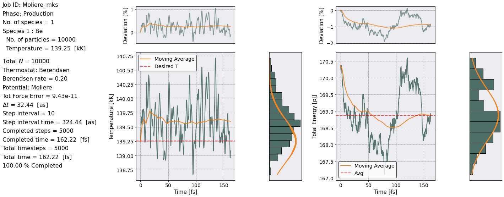

Moliere Potential¶
Simulation data from Figure 8 of Vorberger et al
The YAML input file can be found at input_file and this notebook at notebook.
[1]:
# Import the usual packages.
%pylab
%matplotlib inline
import os
import pandas as pd
from sarkas.processes import PreProcess, Simulation, PostProcess
# Set the plotting style
plt.style.use('MSUstyle')
# Link to the input file.
input_file = os.path.join('input_files', 'moliere_mks.yaml')
Using matplotlib backend: Qt5Agg
Populating the interactive namespace from numpy and matplotlib
Simulation¶
[2]:
sim = Simulation(input_file)
sim.setup(read_yaml = True)
sim.run()
____ __
/\ _`\ /\ \
\ \,\L\_\ __ _ __\ \ \/'\ __ ____
\/_\__ \ /'__`\ /\`'__\ \ , < /'__`\ /',__\
/\ \L\ \/\ \L\.\_\ \ \/ \ \ \\`\ /\ \L\.\_/\__, `\
\ `\____\ \__/.\_\\ \_\ \ \_\ \_\ \__/.\_\/\____/
\/_____/\/__/\/_/ \/_/ \/_/\/_/\/__/\/_/\/___/
An open-source pure-python molecular dynamics suite for non-ideal plasmas.
* * * * * * * * * * * * * * * * * * * * * * * * * * * * * * * * * * * * * * * * * * * * * * * * * *
Simulation
* * * * * * * * * * * * * * * * * * * * * * * * * * * * * * * * * * * * * * * * * * * * * * * * * *
Job ID: Moliere_mks
Job directory: Simulations/Moliere_mks
Equilibration dumps directory:
Simulations/Moliere_mks/Simulation/Equilibration/dumps
Production dumps directory:
Simulations/Moliere_mks/Simulation/Production/dumps
Equilibration Thermodynamics file:
Simulations/Moliere_mks/Simulation/Equilibration/EquilibrationEnergy_Moliere_mks.csv
Production Thermodynamics file:
Simulations/Moliere_mks/Simulation/Production/ProductionEnergy_Moliere_mks.csv
Random Seed = 654984647
PARTICLES:
Total No. of particles = 10000
No. of species = 1
Species ID: 0
Name: Be
No. of particles = 10000
Number density = 1.234875e+29 [N/m^3]
Atomic weight = 9.0122 [a.u.]
Mass = 1.507397e-26 [kg]
Mass density = 1.848000e+06 [kg/m^3]
Charge number/ionization degree = 4.0000
Charge = 6.408707e-19 [C]
Temperature = 1.392542e+05 [K] = 1.200000e+01 [eV]
Debye Length = 1.832054e-11 [Hz]
Plasma Frequency = 6.164440e+14 [Hz]
SIMULATION BOX:
Units: mks
Wigner-Seitz radius = 9.887492e-11 [m]
No. of non-zero box dimensions = 3
Box side along x axis = 3.472931e+01 a_ws = 3.433858e-09 [m]
Box side along y axis = 3.472931e+01 a_ws = 3.433858e-09 [m]
Box side along z axis = 3.472931e+01 a_ws = 3.433858e-09 [m]
Box Volume = 4.048994e-26 [m^3]
Boundary conditions: periodic
ELECTRON PROPERTIES:
Number density: n_e = 9.878998e+29 [N/m^3]
Wigner-Seitz radius: a_e = 6.228730e-11 [m]
Temperature: T_e = 1.392542e+05 [K] = 1.200000e+01 [eV]
de Broglie wavelength: lambda_deB = 1.997449e-10 [m]
Thomas-Fermi length: lambda_TF = 3.896474e-11 [m]
Fermi wave number: k_F = 3.081139e+10 [1/m]
Fermi Energy: E_F = 3.616975e+01 [eV]
Relativistic parameter: x_F = 1.189810e-02 --> E_F = 3.616847e+01 [eV]
Degeneracy parameter: Theta = 3.317689e-01
Coupling: r_s = 1.177059, Gamma_e = 1.926509
Warm Dense Matter Parameter: W = 4.8884e-01
Chemical potential: mu = 2.6934e+00 k_B T_e = 8.9360e-01 E_F
POTENTIAL: Moliere
ALGORITHM: PP
rcut = 6.7052 a_ws = 6.629755e-10 [m]
No. of PP cells per dimension = 5, 5, 5
No. of particles in PP loop = 1943
No. of PP neighbors per particle = 301
Tot Force Error = 9.433221e-11
THERMOSTAT:
Type: Berendsen
First thermostating timestep, i.e. relaxation_timestep = 50
Berendsen parameter tau: 5.000 [timesteps]
Berendsen relaxation rate: 0.200 [1/timesteps]
Thermostating temperatures:
Species ID 0: T_eq = 1.392542e+05 [K] = 1.200000e+01 [eV]
INTEGRATOR:
Type: Verlet
Time step = 3.244415e-17 [s]
Total plasma frequency = 6.164440e+14 [Hz]
w_p dt = 0.0200 ~ 1/49
Equilibration:
No. of equilibration steps = 500
Total equilibration time = 1.6222e-14 [s] ~ 10 w_p T_eq
snapshot interval step = 10
snapshot interval time = 3.2444e-16 [s] = 0.2000 w_p T_snap
Total number of snapshots = 50
Production:
No. of production steps = 5000
Total production time = 1.6222e-13 [s] ~ 100 w_p T_prod
snapshot interval step = 10
snapshot interval time = 3.2444e-16 [s] = 0.2000 w_p T_snap
Total number of snapshots = 500
------------------------ Initialization Times ------------------------
Potential Initialization Time: 0 sec 26 msec 109 usec 823 nsec
Particles Initialization Time: 0 sec 1 msec 337 usec 927 nsec
Total Simulation Initialization Time: 0 sec 26 msec 109 usec 823 nsec
------------- Equilibration -------------
Equilibration Time: 0 hrs 1 min 30 sec
------------- Production -------------
Production Time: 0 hrs 16 min 57 sec
Total Time: 0 hrs 18 min 27 sec
Post Processing¶
[41]:
postproc = PostProcess(input_file)
postproc.setup(read_yaml = True)
postproc.run()
* * * * * * * * * * * * * * * * * * * * * * * * * * * * * * * * * * * * * * * * * * * * * * * * * *
Postprocessing
* * * * * * * * * * * * * * * * * * * * * * * * * * * * * * * * * * * * * * * * * * * * * * * * * *
Job ID: Moliere_mks
Job directory: Simulations/Moliere_mks
PostProcessing directory:
Simulations/Moliere_mks/PostProcessing
Equilibration dumps directory: Simulations/Moliere_mks/Simulation/Equilibration/dumps
Production dumps directory:
Simulations/Moliere_mks/Simulation/Production/dumps
Equilibration Thermodynamics file:
Simulations/Moliere_mks/Simulation/Equilibration/EquilibrationEnergy_Moliere_mks.csv
Production Thermodynamics file:
Simulations/Moliere_mks/Simulation/Production/ProductionEnergy_Moliere_mks.csv
==================== Radial Distribution Function ====================
Data saved in:
Simulations/Moliere_mks/PostProcessing/RadialDistributionFunction/Production/RadialDistributionFunction_Moliere_mks.csv
Data accessible at: self.ra_values, self.dataframe
No. bins = 500
dr = 0.0134 a_ws = 1.3260e-12 [m]
Maximum Distance (i.e. potential.rc)= 6.7052 a_ws = 6.6298e-10 [m]
Radial Distribution Function Calculation Time: 0 sec 1 msec 436 usec 107 nsec

[44]:
postproc.rdf.plot(scaling= postproc.rdf.a_ws,
xlabel = r'$r/a_{ws}$',
title = 'Pair Distribution Function')
[44]:
<AxesSubplot:title={'center':'Pair Distribution Function'}, xlabel='$r/a_{ws}$'>

[24]:
from sarkas.potentials import moliere as mol
from sarkas.potentials import coulomb as coul
[31]:
r_array = postproc.parameters.box_lengths[0] * np.linspace(0.001, 1, 1000)
mol_potential = np.zeros(len(r_array))
coul_potential = np.zeros(len(r_array))
# I need to do this, because Numba compiled the function to take in a float and an array not two arrays
for (ir, r) in enumerate(r_array):
mol_potential[ir], _ = mol.Moliere_force_PP(r, postproc.potential.matrix[:,0, 0])
coul_potential[ir], _ = coul.coulomb_force(r, postproc.potential.matrix[:,0, 0])
[39]:
pot_const = postproc.potential.matrix[0,0,0]
plt.plot(r_array/postproc.parameters.a_ws, mol_potential/pot_const, label = 'Moliere')
plt.plot(r_array/postproc.parameters.a_ws, coul_potential/pot_const, label = 'Coulomb')
plt.legend()
plt.yscale('log')
plt.ylabel(r'$U(r)$ [$Q^2/(4\pi \epsilon_0)$]')
plt.xlabel(r'$r/a_{\rm ws}$')
plt.xlim(0,10)
plt.ylim(1e5,1e11)
plt.title('Potential Plot')
[39]:
Text(0.5, 1.0, 'Potential Plot')

[ ]: